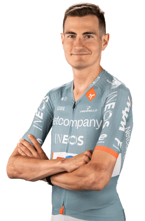

Información de Carlos Rodriguez
Datos personales
- Carlos Rodriguez
- 02/02/2001
- España
- NETCOMPANY INEOS CYCLING TEAM
- 65

Multimedia
Equipo NETCOMPANY INEOS CYCLING TEAM en la Vuelta Ciclista a España 2026.
Datos equipos
- NETCOMPANY INEOS CYCLING TEAM
- Polartec - Kometa Junior Team
Temporada 2025
| Nombre del dato | Resultado |
|---|---|
| Carreras disputadas | 15 |
| Victorias de etapa | 0 |
| Victorias clasificación general | 15 |
| Podios conseguidos | 31 |
| Maillots especiales | 0 |
| Mejor puesto en la general | 34 |